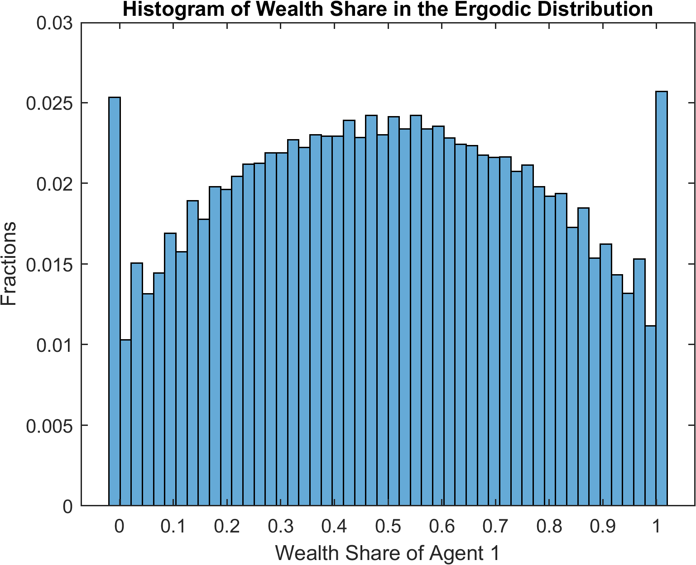

Heaton and Lucas (1996): Incomplete Markets with Portfolio Choices¶
The benchmark model in Heaton and Lucas (1996) is a good starting point to demonstrate the capability of the current framework in dealing with endogenous state variables with implicit law of motions. The model encompasses many ingredients that appear in recent macroeconomic studies, such as incomplete markets, portfolio choices, occasionally binding constraint, non-stationary shock process, and asset pricing with non-trivial market-clearing conditions. We show how the model can be solved with wealth share or consumption share as the endogenous state, which are the two prominent approaches in the literature and naturally fit in our toolbox framework.
The Model¶
This is an incomplete-markets model with two representative agents \(i\in\mathcal{I}=\{1,2\}\) who trade in equity shares and bonds. The aggregate state \(z\in\boldsymbol{Z}\), which consists of capital income share, agents’ income share, and aggregate endowment growth, follows a first-order Markov process. \(p_{t}^{s}(z^t)\) and \(p_{t}^{b}(z^t)\) denote share price and bond price at time \(t\) and in shock history \(z^t=\{z_0,z_1,\dots,z_t\}\). To simplify the notations, we omit the explicit dependence on shock history.
Agent \(i\) takes the share and bond prices as given and maximizes her inter-temporal expected utility
subject to
and
where \(Y^a_t\) denotes the aggregate income. \(d_t = \delta_t Y^a_t\) is total dividend (capital income) and \(Y^i_t = \eta^i_t Y^a_t\) is labor income of agent \(i\). Aggregate income grows at a stochastic rate \(\gamma^a_t = \frac{Y^a_t}{Y^a_{t-1}}\). \(z_t = \{\gamma^a_t,\delta_t,\eta^1_t\}\) follows a first-order Markov process estimated using U.S. data. The borrowing limit is set to be a constant fraction of per capita income, i.e., \(K^b_t = \bar{K}^b Y^a_t\).
In equilibrium, prices are determined such that markets clear in each shock history:
We use the financial wealth share
as an endogenous state variable. In equilibrium, the market clearing conditions imply that \(\omega^1_t + \omega^2_t = 1\).
For any variable \(x_t\), let \(\hat{x}_t\) denote the normalized variable: \(\hat{x}_t=\frac{x_t}{Y^a_t}\) (except \(b^i_t\) for which \(\hat{b}^i_t = \frac{b^i_t}{Y^a_{t-1}}\)). Using this normalization, agent i’s budget constraint can be rewritten as
The wealth share is rewritten as
The optimality of agent i’s consumption and asset choices is captured by the first-order conditions in \(s^i_{t+1}\) and \(b^i_{t+1}\):
where \(\hat{\mu}^{i,s}_t\) and \(\mu^{i,b}_t\) are the Lagrangian multipliers on agent i’s no short sale constraint and borrowing constraint, respectively. The multipliers and portfolio choices satisfy the complementary-slackness conditions:
Wealth Share as Endogenous State¶
We define a recursive equilibrium with the wealth share \(\omega_t\) defined before. A recursive equilibrium is \(\hat{c}^i(z,\omega), {s^i}', {\hat{b}^i}', \hat{\mu}^{i,s}, \hat{\mu}^{b,i}, p^s, p^b, \omega'(z';z,\omega)\) that satisfy the agents’ optimization conditions and market clearing conditions stated above.
We omit the explicit dependence on state \((z,\omega)\) except the first variable, and highlight that the state transition function \(\omega'\) characterizes the implicit law of motion that should hold for each of the future exogenous state \(z'\). It should be clear at this moment that the key feature of our framework that enables to cast the equilibrium system as a single equation system, despite the non-trivial state-transition functions, is to include the implicit transition \(\omega'(z')\) for each \(z'\) as unknowns.
The system can be implemented by the following HL1996.gmod code
1 2 3 4 5 6 7 8 9 10 11 12 13 14 15 16 17 18 19 20 21 22 23 24 25 26 27 28 29 30 31 32 33 34 35 36 37 38 39 40 41 42 43 44 45 46 47 48 49 50 51 52 53 54 55 56 57 58 59 60 61 62 63 64 65 66 67 68 69 70 71 72 73 74 75 76 77 78 79 80 81 82 83 84 85 86 87 88 89 90 91 92 93 94 95 96 97 98 | % Parameters
parameters beta gamma Kb;
beta = 0.95; % discount factor
gamma = 1.5; % CRRA coefficient
Kb = -0.05; % borrowing limit in ratio of aggregate output
% Shock variables
var_shock g d eta1;
% Shocks and transition matrix
shock_num = 8;
g = [.9904 1.0470 .9904 1.0470 .9904 1.0470 .9904 1.0470];
d = [.1402 .1437 .1561 .1599 .1402 .1437 .1561 .1599];
eta1 = [.3772 .3772 .3772 .3772 .6228 .6228 .6228 .6228];
shock_trans = [
0.3932 0.2245 0.0793 0.0453 0.1365 0.0779 0.0275 0.0157
0.3044 0.3470 0.0425 0.0484 0.1057 0.1205 0.0147 0.0168
0.0484 0.0425 0.3470 0.3044 0.0168 0.0147 0.1205 0.1057
0.0453 0.0793 0.2245 0.3932 0.0157 0.0275 0.0779 0.1365
0.1365 0.0779 0.0275 0.0157 0.3932 0.2245 0.0793 0.0453
0.1057 0.1205 0.0147 0.0168 0.3044 0.3470 0.0425 0.0484
0.0168 0.0147 0.1205 0.1057 0.0484 0.0425 0.3470 0.3044
0.0157 0.0275 0.0779 0.1365 0.0453 0.0793 0.2245 0.3932
];
shock_trans = shock_trans ./ sum(shock_trans,2);
% State variables
var_state w1; % wealth share
w1 = linspace(-0.05,1.05,201);
% Endogenous variables and bounds
var_policy c1 c2 s1p nb1p nb2p ms1 ms2 mb1 mb2 ps pb w1n[8];
inbound c1 1e-12 1;
inbound c2 1e-12 1;
inbound s1p 0.0 1.0;
inbound nb1p 0.0 1.0; % nb1p=b1p-Kb
inbound nb2p 0.0 1.0;
inbound ms1 0 1; % Multilier for constraints
inbound ms2 0 1;
inbound mb1 0 1;
inbound mb2 0 1;
inbound ps 0 3 adaptive(1.5);
inbound pb 0 3 adaptive(1.5);
inbound w1n -0.5 1.5;
% Extra output variables
var_aux equity_premium;
% Interpolation objects
var_interp ps_future pb_future c1_future c2_future;
initial ps_future 0.0;
initial pb_future 0.0;
initial c1_future w1.*d+eta1;
initial c2_future (1-w1).*d+1-eta1;
ps_future = ps;
pb_future = pb;
c1_future = c1;
c2_future = c2;
% Variables to be used in simulation if SIMU_RESOLVE=1
var_output c1 c2 ps pb equity_premium w1n;
model;
% Interpolation
[psn',pbn',c1n',c2n'] = GNDSGE_INTERP_VEC'(w1n');
% Expectations in Euler Equations
es1 = GNDSGE_EXPECT{g'^(1-gamma)*(c1n'/c1)^(-gamma)*(psn'+d')/ps};
es2 = GNDSGE_EXPECT{g'^(1-gamma)*(c2n'/c2)^(-gamma)*(psn'+d')/ps};
eb1 = GNDSGE_EXPECT{g'^(-gamma)*(c1n'/c1)^(-gamma)/pb};
eb2 = GNDSGE_EXPECT{g'^(-gamma)*(c2n'/c2)^(-gamma)/pb};
% b transformation
b1p = nb1p + Kb; % Transform bond back
b2p = nb2p + Kb;
s2p = 1-s1p; % Market clear of shares
% Budget constraint
budget_1 = w1*(ps+d)+eta1 - c1 - ps*s1p - pb*b1p;
budget_2 = (1-w1)*(ps+d)+(1-eta1) - c2 - ps*s2p - pb*b2p;
% Consistency
w1_consis' = (s1p*(psn'+d') + b1p/g')/(psn'+d') - w1n';
% Extra output
equity_premium = GNDSGE_EXPECT{(psn'+d')/ps*g'} - 1/pb;
equations;
-1+beta*es1+ms1;
-1+beta*es2+ms2;
-1+beta*eb1+mb1;
-1+beta*eb2+mb2;
ms1*s1p;
ms2*s2p;
mb1*nb1p;
mb2*nb2p;
b1p+b2p;
budget_1;
budget_2;
w1_consis';
end;
end;
simulate;
num_periods = 10000;
num_samples = 24;
initial w1 0.5;
initial shock 1;
var_simu c1 c2 ps pb equity_premium;
w1' = w1n';
end;
|
As can be seen, the implicit law of motion is captured by the consistency equation
72 | w1_consis' = (s1p*(psn'+d') + b1p/g')/(psn'+d') - w1n';
|
which says that the induced \(\omega'\) by current decisions of stock and bond holdings should be consistent with the unknowns for each of the future exogenous states state by state. Notice that the unknowns \(\omega\) are inputs in the state transition functions to forecast future consumption and prices, which are required to formulate the recursive system, in
58 | [psn',pbn',c1n',c2n'] = GNDSGE_INTERP_VEC'(w1n');
|
Accordingly, \(\omega'\) is declared to a be a vector of unknowns in
28 | var_policy c1 c2 s1p nb1p nb2p ms1 ms2 mb1 mb2 ps pb w1n[8];
|
and the consistency equations are declared to be part of the equation system in
87 | w1_consis';
|
Since now the transition of endogenous state involves realizations of future exogenous states, in the simulation, we need to specify the transition depending on future realization as
97 | w1' = w1n';
|
Notice the prime operator in w1n’, which is the syntax to specify the transition’s dependence on the realization of future exogenous states (recall, w1n is a vector solved as part of the var_policy).
Now we discuss several tricks that facilitate casting the recursive system to the toolbox, which are commonly used for this class of problems.
Since the original problem’s borrowing constraint is proportational to aggregate endowment, we can use a transformation to simplify the constraint
65 66 | b1p = nb1p + Kb; % Transform bond back
b2p = nb2p + Kb;
|
where Kb is the parameter governing the borrowing constraint in fraction of aggregate endowment (\(b^i \geq Kb * Y^a\)), and nb1p is the unknown defined as \(nb^i=\hat{b}^i+Kb\) which is required to be positive. Such transformation remains trivial in the current problem, but becomes crucial when the borrowing constraint depends on an asset price, which makes the constraint not necessarily a box constraint. See example Cao and Nie (2017), which provides a global solution to a Kiyotaki-Moore type model, where the borrowing constraint is tied to the price of an asset in fixed supply.
Some built-in functions of the toolbox are used in this example.
58 | [psn',pbn',c1n',c2n'] = GNDSGE_INTERP_VEC'(w1n');
|
GNDSGE_INTERP_VEC is a built-in function that evaluates function approximations for implicit state transition functions defined in var_interp once for all. The results are returned in the order of variables defined in var_interp. The prime operator following GNDSGE_INTERP_VEC indicates that the approximation is done for each of the exogenous states. Accordingly, the returned values are vectors (of length 8 in the current example) corresponding to each of the future exogenous states. This step can be replaced by
psn' = ps_future'(w1n');
pbn' = pb_future'(w1n');
c1n' = c1_future'(w1n');
c2n' = c2_future'(w1n');
although at a lower speed since GNDSGE_INTERP_VEC evaluates function approximations with vectorization. (This is particular relevant when using the adaptive sparse grid method as the coefficients are stored in a table with each entry represents the coefficients across all vector dimensions. Therefore, using GNDSGE_INTERP_VEC instead of individual evaluations not only enables vectorization but also allows searching the hash table only once). GNDSGE_INTERP_VEC can be also used to skip certain variables in var_interp when some of them are not necessary, and can be used without the prime operator but explicitly specifying the exogenous state that the approximation should be evaluated. This is particularly relevant when expectation can be calculated before evaluating the equation system, so the evaluation is conditional on the current state. See the Toolbox API for details.
After the gmod file is parsed and compiled by a local or remote compiler, first call the iter file in matlab, which produces results as follows
>> IterRslt = iter_HL1996;
Iter:10, Metric:0.133835, maxF:7.07521e-09
Elapsed time is 8.338626 seconds.
...
Iter:209, Metric:9.56568e-07, maxF:8.69762e-09
Elapsed time is 0.443740 seconds.
We can inspect the policy functions (e.g., for the equity premium defined in Line 74 and included in var_output in Line 54):
>> figure;
plot(IterRslt_wealth.var_state.w1, IterRslt_wealth.var_aux.equity_premium*100,'LineWidth',1.5);
title('Equity Premium');
xlabel('Wealth Share of Agent 1');
ylabel('%');
which produces

The policy functions demonstrate the non-linear and non-monotone properties of the model. These non-linear regions appear with positive probability in the model’s ergodic set as shown below.
We can simulate the model using the converged policy functions contained in IterRslt:
>> SimuRslt = simulate_HL1996(IterRslt);
Periods: 1000
shock w1 c1 c2 ps pbequity_premium
1 0.7879 0.6058 0.5344 2.48 0.93240.001541
Elapsed time is 2.077381 seconds.
Periods: 2000
shock w1 c1 c2 ps pbequity_premium
1 0.7147 0.5925 0.5477 2.469 0.93220.001442
Elapsed time is 1.478454 seconds.
...
Periods: 10000
shock w1 c1 c2 ps pbequity_premium
3 0.2948 0.5243 0.6318 2.553 0.92950.001643
Elapsed time is 1.488598 seconds.
And inspect the simulation results:
>> figure;
histogram(SimuRslt.w1(:,1000:end),50,'Normalization','probability');
title('Histogram of Wealth Share in the Ergodic Distribution');
xlabel('Wealth Share of Agent 1');
ylabel('Fractions');
which produces
{kind=link}
The spikes in the ergodic distribution of wealth share at the two ends imply that the constraints are occasionally binding.
Consumption Share as Endogenous State¶
The model can be solved using consumption share as the endogenous state. In this case, the budget constraint
is a natural consistency equation for the transition of consumption share \(\hat{c}^1\). Specifically, with consumption share, the recursive equilibrium can be defined as \({s^i}'(z,\hat{c}^1),{\hat{b}^i}'(z,\hat{c}^1), \hat{p}^s(z,\hat{c}^1),p^b(z,\hat{c}^1), {\hat{c}^1}'(z';z,\hat{c}^1)\) such that
where \(\hat{c}^2\) (and \((\hat{c}^2)'\)) can be trivially inferred from the goods market clearing condition \(\hat{c}^1+\hat{c}^2=1 +\hat{d}\), and, hence does not need to be defined as extra unknowns when evaluating the equation system. The “Financial Wealth” is a function of future endogenous states, and can be part of the implicit state transition functions.
The gmod file that implements the recursive system is (HL1996_consumption_share.gmod)
1 2 3 4 5 6 7 8 9 10 11 12 13 14 15 16 17 18 19 20 21 22 23 24 25 26 27 28 29 30 31 32 33 34 35 36 37 38 39 40 41 42 43 44 45 46 47 48 49 50 51 52 53 54 55 56 57 58 59 60 61 62 63 64 65 66 67 68 69 70 71 72 73 74 75 76 77 78 79 80 81 82 83 84 85 86 87 88 89 90 91 92 93 94 95 96 97 98 99 100 | % Parameters
parameters beta gamma Kb;
beta = 0.95; % discount factor
gamma = 1.5; % CRRA coefficient
Kb = -0.05; % borrowing limit in ratio of aggregate output
% Shock variables
var_shock g d eta1;
% Shocks and transition matrix
shock_num = 8;
g = [.9904 1.0470 .9904 1.0470 .9904 1.0470 .9904 1.0470];
d = [.1402 .1437 .1561 .1599 .1402 .1437 .1561 .1599];
eta1 = [.3772 .3772 .3772 .3772 .6228 .6228 .6228 .6228];
shock_trans = [
0.3932 0.2245 0.0793 0.0453 0.1365 0.0779 0.0275 0.0157
0.3044 0.3470 0.0425 0.0484 0.1057 0.1205 0.0147 0.0168
0.0484 0.0425 0.3470 0.3044 0.0168 0.0147 0.1205 0.1057
0.0453 0.0793 0.2245 0.3932 0.0157 0.0275 0.0779 0.1365
0.1365 0.0779 0.0275 0.0157 0.3932 0.2245 0.0793 0.0453
0.1057 0.1205 0.0147 0.0168 0.3044 0.3470 0.0425 0.0484
0.0168 0.0147 0.1205 0.1057 0.0484 0.0425 0.3470 0.3044
0.0157 0.0275 0.0779 0.1365 0.0453 0.0793 0.2245 0.3932
];
shock_trans = shock_trans ./ sum(shock_trans,2); % Normalize
% State variables
var_state c1; % wealth share
c1 = linspace(0.2,0.8,101);
% Endogenous variables and bounds
var_policy s1p nb1p nb2p ms1 ms2 mb1 mb2 ps pb c1n[8];
inbound s1p 0.0 1.0;
inbound nb1p 0.0 1.0; % nb1p=b1p-Kb
inbound nb2p 0.0 1.0;
inbound ms1 0 1; % Multilier for constraints
inbound ms2 0 1;
inbound mb1 0 1;
inbound mb2 0 1;
inbound ps 0 3 adaptive(1.5);
inbound pb 0 3 adaptive(1.5);
inbound c1n 0.0 1.0;
% Extra output variables
var_aux equity_premium c2 w1 flow;
% Interpolation objects
var_interp ps_future pb_future flow_future;
initial ps_future 0.0;
initial pb_future 0.0;
initial flow_future eta1;
ps_future = ps;
pb_future = pb;
flow_future = flow;
% Variables to be used in simulation
var_output c2 w1 ps pb equity_premium c1n;
model;
% Interpolation
[psn',pbn',flow_future'] = GNDSGE_INTERP_VEC'(c1n');
% Goods market clear
c2n' = 1+d'-c1n';
c2 = 1+d-c1;
% Expectations in Euler Equations
es1 = GNDSGE_EXPECT{g'^(1-gamma)*(c1n'/c1)^(-gamma)*(psn'+d')/ps};
es2 = GNDSGE_EXPECT{g'^(1-gamma)*(c2n'/c2)^(-gamma)*(psn'+d')/ps};
eb1 = GNDSGE_EXPECT{g'^(-gamma)*(c1n'/c1)^(-gamma)/pb};
eb2 = GNDSGE_EXPECT{g'^(-gamma)*(c2n'/c2)^(-gamma)/pb};
% b transformation
b1p = nb1p + Kb; % Transform bond back
b2p = nb2p + Kb;
s2p = 1-s1p; % Market clear of shares
% Budget constraint
budget_1 = w1*(ps+d)+eta1 - c1 - ps*s1p - pb*b1p;
budget_2 = (1-w1)*(ps+d)+(1-eta1) - c2 - ps*s2p - pb*b2p;
% Consistency
c1_consis' = s1p*(psn'+d') + b1p/g' + flow_future' - c1n';
% Calculate w1, from the individual budget constraint
w1 = (c1 + ps*s1p + pb*b1p - eta1) / (ps + d);
% Extra output
flow = eta1 - ps*s1p - pb*b1p;
equity_premium = GNDSGE_EXPECT{(psn'+d')/ps*g'} - 1/pb;
equations;
-1+beta*es1+ms1;
-1+beta*es2+ms2;
-1+beta*eb1+mb1;
-1+beta*eb2+mb2;
ms1*s1p;
ms2*s2p;
mb1*nb1p;
mb2*nb2p;
b1p+b2p;
c1_consis';
end;
end;
simulate;
num_periods = 10000;
num_samples = 24;
initial c1 0.5;
initial shock 1;
var_simu w1 c2 ps pb equity_premium;
c1' = c1n';
end;
|
As shown, compared to the one with wealth share as the endogenous state, the new implementation is made possible by declaring \({\hat{c}_1}'(z')\) to be c1n in
28 | var_policy s1p nb1p nb2p ms1 ms2 mb1 mb2 ps pb c1n[8];
|
by defining the “Financial Wealth” by flow as var_interp
42 | var_interp ps_future pb_future flow_future;
|
by defining the consistency equations for \(\hat{c}_1\) in
72 | c1_consis' = s1p*(psn'+d') + b1p/g' + flow_future' - c1n';
|
and including them as part of the equation system.
Finally we compare the solutions solved with wealth share as the endogenous state and consumption share as the endogenous state. This can be done by projecting the solutions to the same endogenous state. For example
74 | w1 = (c1 + ps*s1p + pb*b1p - eta1) / (ps + d);
|
constructs the wealth share from the budget constraint following the definition.

As shown, the two solutions (solid lines for wealth share as endogenous state and markers “X” for consumption share as endogenous state) are not visually distinguishable.
What’s Next?¶
Through this simple example, you understand the power of the toolbox and all the essential ingredients to solve a modern macro model.
For the time-iteration algorithm to work robustly, a crucial step is to define the starting point of the iteration properly. A candidate that delivers good theoretical property and proves to be numerically stable is to start from a last-period problem, so the algorithm can be viewed as taking the limit of the solution from finite-horizon iterations (Duffie et al (1994); Magill and Quinzi (1994); Cao (2020)).
The last-period problem has been so far trivial in the RBC model and Heaton and Lucas (1996) examples, but could turn out to be more complex and requires to define a different system of equations than the main model; block. Also, at the boundary of the state space, the equilibrium may be characterized by a different system of equations, and such boundary conditions turn out to be necessary to solve many models robustly (for example, consumption might be exactly zero at the boundary, violating the Inada condition). To see how these issues are addressed very conveniently in the toolbox, see example Cao and Nie (2017).
Or you can directly proceed to the toolbox’s API.